nci_url <- "https://web.stanford.edu/~hastie/ElemStatLearn/datasets/nci.data.csv"
nci <- read.table(url(nci_url), sep = ",", row.names = 1, header = TRUE) |>
as.matrix() |>
t()14 Background
Studies in biology have become data-intensive as high throughput experiments in Omics have produced data sets of massive volume and complexity. One example is shown in the figure below. It shows a part of the gene expression data for 6830 genes for 64 cell lines obtained from https://web.stanford.edu/~hastie/ElemStatLearn/datasets/nci.data.csv. Many illustrations here are generated from the data.
# table displayed as text
round(nci, 2)[, sample(1000, 50)] |>
as_tibble(rownames = "sample") |>
pivot_longer(-sample, names_to = "gene") |>
ggplot(aes(gene, sample)) +
geom_text(aes(label = value), hjust = 0) +
theme_void(base_size = 5)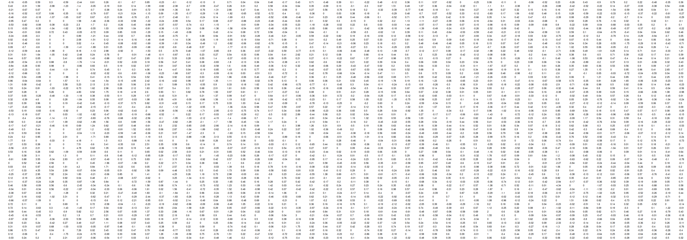
It makes difficult to get an idea about the contents of the data. Dimensional reduction is frequently used for this challenge. It reduces vast dimensions of a data to a manageable number of dimensions and helps us get a simplified overview of the data. One of the popular methods for the dimensional reduction is principal component analysis (PCA).
PCA focuses on dispersion or variance of data. Let’s take one of the variables and see how the values of it are dispersed around average.
corr <- cor(nci)
corr[upper.tri(corr, diag = TRUE)] <- NA # to use arrayInd
corr[corr > 0.95] <- NA # avoid too much correlated
# highly correlated gene pair
idx <- arrayInd(which.max(corr), dim(corr))[1, ]
idx <- sort(idx) # switch x and y in PCA plot
# correlated variables
correlated_vs <- as.list(as.data.frame(nci[1:30, idx]))
names(correlated_vs) <- sub("g", "Variable ", names(correlated_vs))fig.cap <- paste(
"The red numbers show the index of each sample.",
"The red line shows the mean and the dashed lines show the distance between each observation and mean."
)
# Select a variable
v1 <- correlated_vs[[1]]
v1_name <- names(correlated_vs)[1]
# plot the values of the variable
plot(v1, xlab = "", ylab = v1_name, ylim = range(v1) * 1.1, xaxt = 'n')
title(xlab = "Sample index", mgp = c(1, 0, 0))
m <- mean(v1)
# below or above the points, determined by the comparison with mean
pos <- (v1 > m) * 2 + 1
# sample index
text(seq(v1), v1, seq(v1), cex = 0.65, col = "red", pos = pos)
# draw the mean line
abline(h = m, col = "red")
# for each observation draw a line from that point to the mean
for(ii in seq(v1)) {
segments(x0 = ii, x1 = ii, y0 = v1[ii], y1 = m, lty = "dashed")
}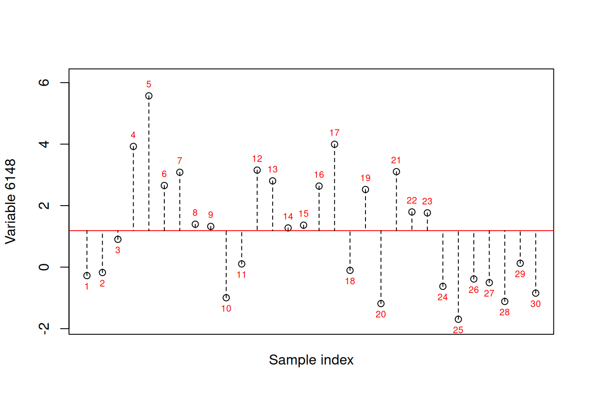
The values of individual variables are dispersed as above. Interestingly, multiple variables often have dispersed in the similar pattern.
fig.cap <- paste(
"The red numbers show the index of each sample.",
"The red line shows the mean and the dashed lines show the distance between each observation and mean."
)
# Two correlated variables
vs <- correlated_vs
gap <- 0.1
# plot the values of the variable
plot(seq(vs[[1]]) - gap, vs[[1]],
xlab = "", ylab = paste("Variables", paste(idx, collapse = " & ")),
ylim = range(vs[[1]]) * 1.1, xaxt = 'n')
title(xlab = "Sample index", mgp = c(1, 0, 0))
points(seq(vs[[2]]) + gap, vs[[2]], col = "blue", pch = 16)
m <- sapply(vs, mean)
# below or above the points, determined by the comparison with mean
pos <- (vs[[1]] > m[1]) * 2 + 1
# sample index
text(seq(vs[[1]]), vs[[1]], seq(vs[[1]]), cex = 0.65, col = "red", pos = pos)
# draw the mean line
abline(h = m[1], col = "red")
abline(h = m[2], col = "blue")
# for each observation draw a line from that point to the mean
for(ii in seq(vs[[1]])) {
segments(x0 = ii - gap, x1 = ii - gap, y0 = vs[[1]][ii], y1 = m[1], lty = "dashed")
segments(x0 = ii + gap, x1 = ii + gap, y0 = vs[[2]][ii], y1 = m[2], col = "blue", lty = "dashed")
}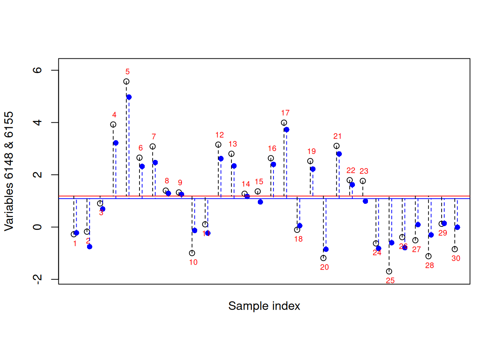
In the scatter plot of those two variables, the correlation is more obvious.
opa <- par(pty = "s") # square plot
rg <- range(vs)
plot(vs[[1]], vs[[2]], xlab = names(vs)[1], ylab = names(vs)[2], xlim = rg, ylim = rg)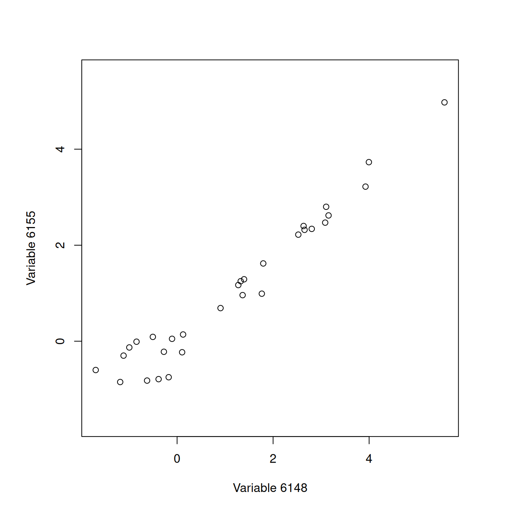
par(opa)As both variables provide almost identical information redundantly in terms of dispersion across objects (or observations), we can attempt to reduce the number of variables, i.e. the dimension.
15 Two-dimensional data
PCA finds a new variable that explains most of the dispersion or variance of the two variables of interest. The remaining smaller portion of variance in the data is stored in an orthogonal variable to the primary variable. It is achieved by new axes and rotation graphically, which are mathematically expressed by linear combinations of the variables.
vs <- correlated_vs
pca <- prcomp(bind_rows(vs))
s <- pca$rotation[2, 1] / pca$rotation[1, 1] # slope
opa <- par(pty = "s") # square plot
col <- grDevices::palette.colors(palette = "Classic Tableau") |>
rep_len(length(vs[[1]])) # individual colors of points
rg <- range(vs)
plot(vs[[1]], vs[[2]], xlab = names(vs)[1], ylab = names(vs)[2],
pch = 16, col = col, xlim = rg, ylim = rg)
# PC1
abline(b = s, a = pca$center[2] - s * pca$center[1], col = "red")
# indicate "New axis"
text(mean(rg), mean(rg), "New primary axis", col = "red", srt = atan(s) / pi * 180)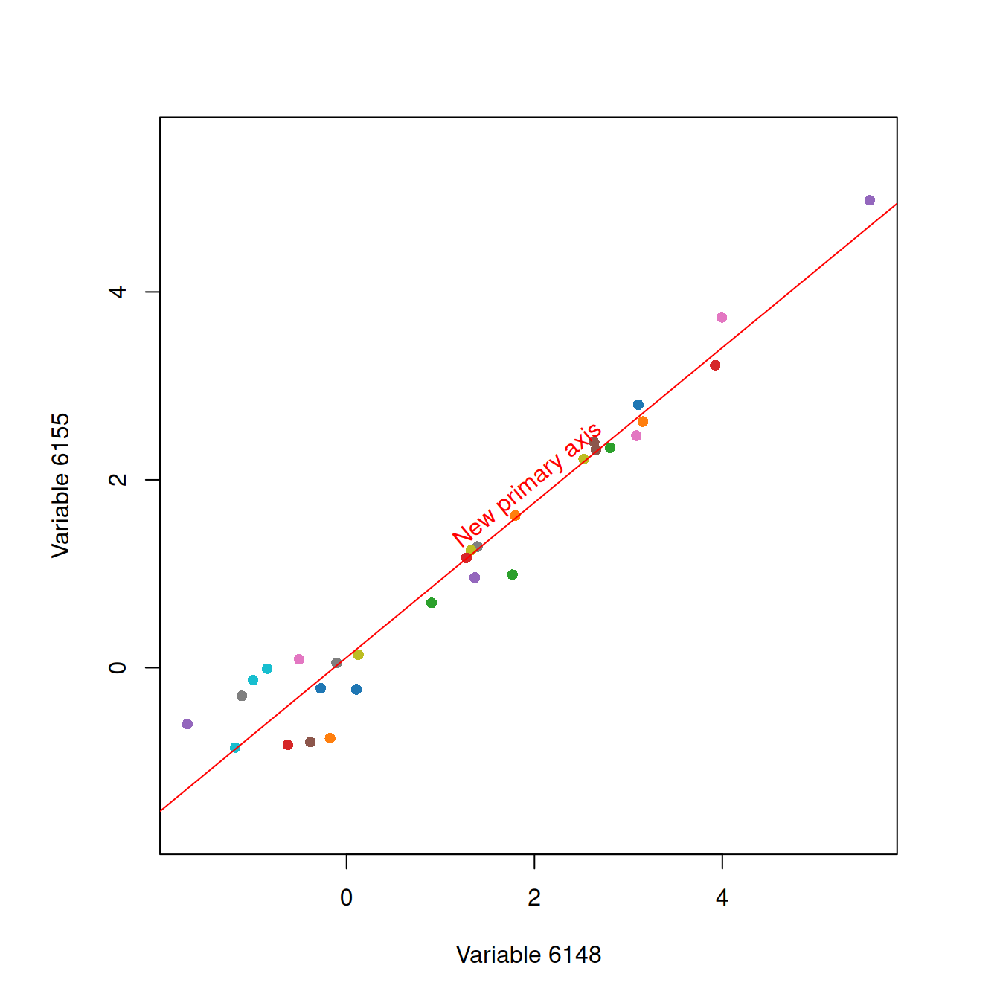
par(opa)Let \(x_{ij}\) denote an observation \(i\) for a variable \(j\), and \(y_{i1}\) be a linear combination of \(x_{i1}\) and \(x_{i2}\).
\[y_{i1} = a_{11} x_{i1} + a_{21} x_{i2} = \sum_{j=1}^{2} a_{j1} x_{ij} = \sum_{j=1}^{2} x_{ij} a_{j1}\]
By adjusting \(a_{11}\) and \(a_{21}\), let the \(\mathbf{y}_1^T = [ y_{11}, y_{21}, \dots, y_{n1} ]\) explain largest amount of variance of the data. Then, the \(\mathbf{y}_1\) is called the first principal component (PC). In a matrix equation for all \(n\) observations, \[\mathbf{y}_1 = \mathbf{X} \mathbf{a}_1\] , where \[ \underset{n\times 1}{\mathbf{y}_1} = \left[ {\begin{array}{c} y_{11} \\ y_{21} \\ \vdots \\ y_{n1} \end{array}} \right] , \quad \underset{n\times 2}{\mathbf{X}} = \left[ {\begin{array}{cc} x_{11} & x_{12} \\ x_{21} & x_{22} \\ \vdots & \vdots \\ x_{n1} & x_{n2} \\ \end{array}} \right] \quad and \quad \underset{2\times 1}{\mathbf{a}_1} = \left[ {\begin{array}{c} a_{11} \\ a_{21} \\ \end{array}} \right] \]
The values of the 1st PC, often called PC1 scores, are colorfully highlighted in the scatter plot of the two original variables.
# coordinates after projection onto PC1
x <- pca$x
x[, 2] <- 0 # PC2 = 0
on_pc1 <- t(t(x %*% solve(pca$rotation)) + pca$center)
opa <- par(pty = "s") # square plot
plot(vs[[1]], vs[[2]],
xlab = names(vs)[1], ylab = names(vs)[2], xlim = rg, ylim = rg, type = "n")
# show the projection
segments(x0 = vs[[1]], x1 = on_pc1[, 1],
y0 = vs[[2]], y1 = on_pc1[, 2],
col = scales::alpha(col, alpha = 0.7))
# indicate "PC1"
text(mean(rg), mean(rg), "The 1st PC", col = "red", srt = atan(s) / pi * 180)
# before projection
points(vs[[1]], vs[[2]], pch = 16, col = scales::alpha(col, alpha = 0.3))
# PC1
abline(b = s, a = pca$center[2] - s * pca$center[1], col = "red")
# after projection
points(on_pc1[, 1], on_pc1[, 2], pch = 16, col = col)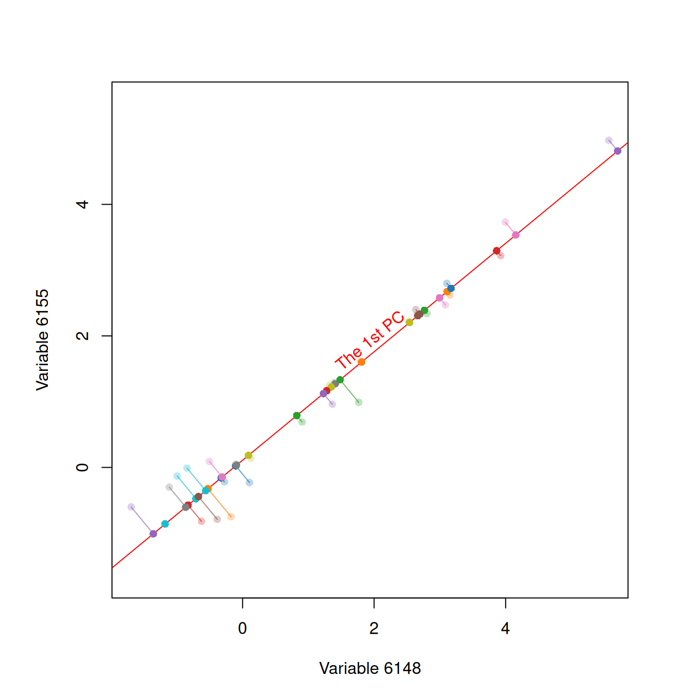
par(opa)The scores are presented in the coordinate system of the 1st PC (PC1). As shown below, it is graphically a rotation of the plot above.
rg <- apply(pca$x, 2, range)
plot(pca$x, axes = FALSE, type = "n", ylab = "", mgp = c(1, 0, 0))
axis(1, pos = c(0, 0))
abline(h = 0)
# before projection
points(pca$x, pch = 16, col = scales::alpha(col, alpha = 0.3))
# show the projection
segments(x0 = pca$x[, 1], x1 = x[, 1],
y0 = pca$x[, 2], y1 = 0,
col = scales::alpha(col, alpha = 0.7))
points(x, pch = 16, col = col)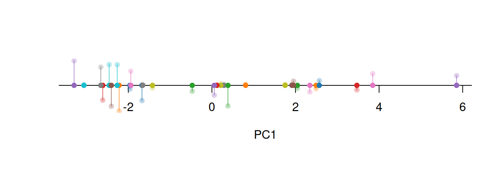
If \(\mathbf{S}\) is the covariance matrix of \(\mathbf{X}\) having eigenvalue-eigenvector pairs (\(\hat{\lambda}_1\), \(\hat{\mathbf{e}}_1\)) and (\(\hat{\lambda}_2\), \(\hat{\mathbf{e}}_2\)) where \(\hat{\lambda}_1 \ge \hat{\lambda}_2 \ge 0\), it has been proved that when \[\mathbf{a}_1 = \hat{\mathbf{e}}_1\] , the \(\mathbf{y}_1\) maximizes the proportion explained by it of the variance of \(\mathbf{X}\). Hence, the first principal component is \[\mathbf{y}_1 = \mathbf{X} \hat{\mathbf{e}}_1\] As the total sample variance is \(\sum_{k} \hat{\lambda}_k\), the explained proportion by the first principal component is \[\frac{\hat{\lambda}_1}{\sum_{k} \hat{\lambda}_k}\]
16 Multiple dimensional data
Extension of PCA from 2-D to multiple dimension is rather simple. The matrices are extended as
\[ \underset{n\times p}{\mathbf{X}} = \left[ {\begin{array}{cccc} x_{11} & x_{12} & \cdots & x_{1p} \\ x_{21} & x_{22} & \cdots & x_{2p} \\ \vdots & \vdots & \ddots & \vdots \\ x_{n1} & x_{n2} & \cdots & x_{np} \\ \end{array}} \right] \quad and \quad \underset{p\times 1}{\mathbf{a}_1} = \left[ {\begin{array}{c} a_{11} \\ a_{21} \\ \vdots \\ a_{p1} \\ \end{array}} \right] \] PCA finds an axis or a linear combination that maximizes the explained variances. Because we can repeat the process more than once, we can have the 2nd, 3rd, and 4th principal components. Similar to the 1st PC, the 2nd PC is chosen such that it explains the largest variances after excluding the variances already explained by the 1st PC.
If \(\mathbf{S}\) is the covariance matrix of \(\mathbf{X}\) having eigenvalue-eigenvector pairs (\(\hat{\lambda}_1\), \(\hat{\mathbf{e}}_1\)), (\(\hat{\lambda}_2\), \(\hat{\mathbf{e}}_2\)), \(\cdots\), (\(\hat{\lambda}_p\), \(\hat{\mathbf{e}}_p\)) where \(\hat{\lambda}_1 \ge \hat{\lambda}_2 \ge \cdots \ge \hat{\lambda}_p \ge 0\), the \(k\)th principal component is \[\mathbf{y}_k = \mathbf{X} \hat{\mathbf{e}}_k\]
The proportion of variance explained by the \(k\)th principal component is \[\frac{\hat{\lambda}_k}{\sum_{l} \hat{\lambda}_l}\]
17 Notes for PCA
17.1 Missing
Like many other multiple variable analysis, any missing value is not allowed. You may need to impute or trim incomplete cases out.
17.2 Scaling
Scaling ahead of PCA is often recommended. If one variable has substantially larger variance than other variables, basically that variable will be selected as the first principal component. But, we don’t usually want to give a higher weight to one variable or a few, especially when units of the variables are different or arbitrary.
18 Output from PCA
# somewhat correlated variables only, otherwise too little variance explained by PC1
corr <- cor(nci)
diag(corr) <- NA # to use arrayInd
is_min_corr <- apply(corr, 1, \(x) max(abs(x), na.rm = TRUE) > 0.8 & mean(abs(x), na.rm = TRUE) > 0.21)
min_corr <- nci[, is_min_corr]
pca <- prcomp(min_corr, scale. = TRUE)18.1 Principal components
The output presented and investigated most frequently from PCA is the first two principal components (PCs). The values of those two PCs, PC1 and PC2 scores, are often presented in a scatter plot. It is called “PCA score plot” or simply “PCA plot”.
plot(pca$x[, 1:2], pch = 16)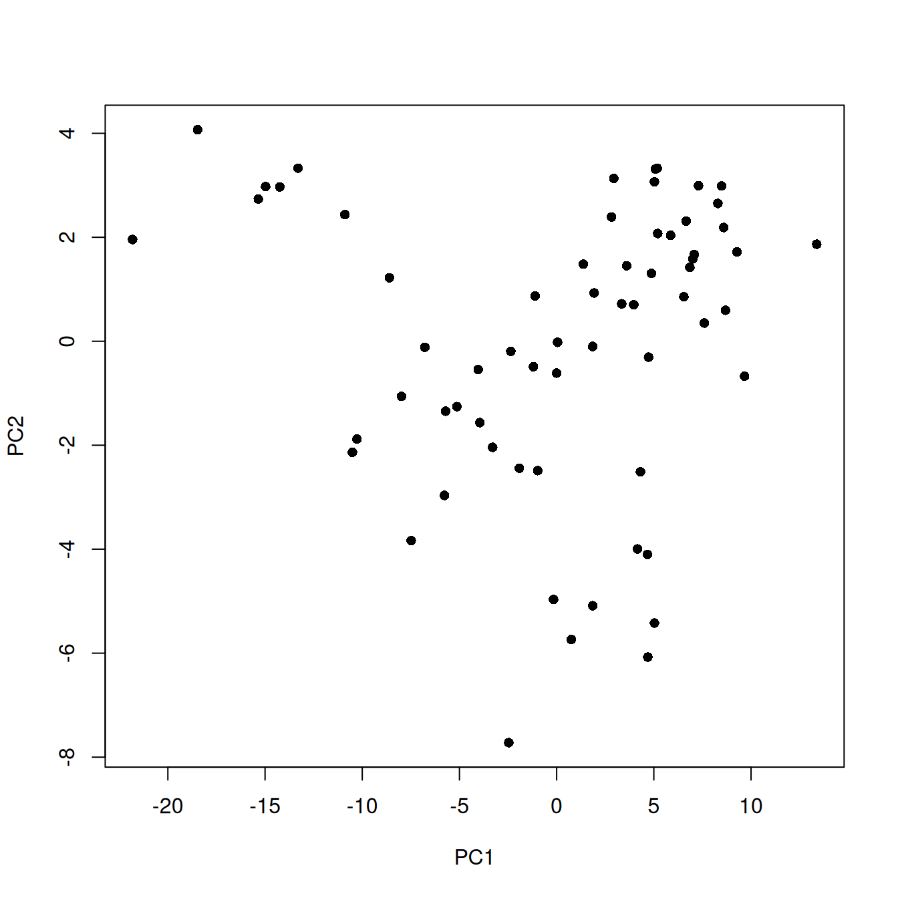
The x and y axes of the plot often are modified. The labels include how much proportion of the variance was explained by the axis. The axes are standardized to have a similar range.
library(ggfortify)
autoplot(pca)Warning: `aes_string()` was deprecated in ggplot2 3.0.0.
ℹ Please use tidy evaluation idioms with `aes()`.
ℹ See also `vignette("ggplot2-in-packages")` for more information.
ℹ The deprecated feature was likely used in the ggfortify package.
Please report the issue at <https://github.com/sinhrks/ggfortify/issues>.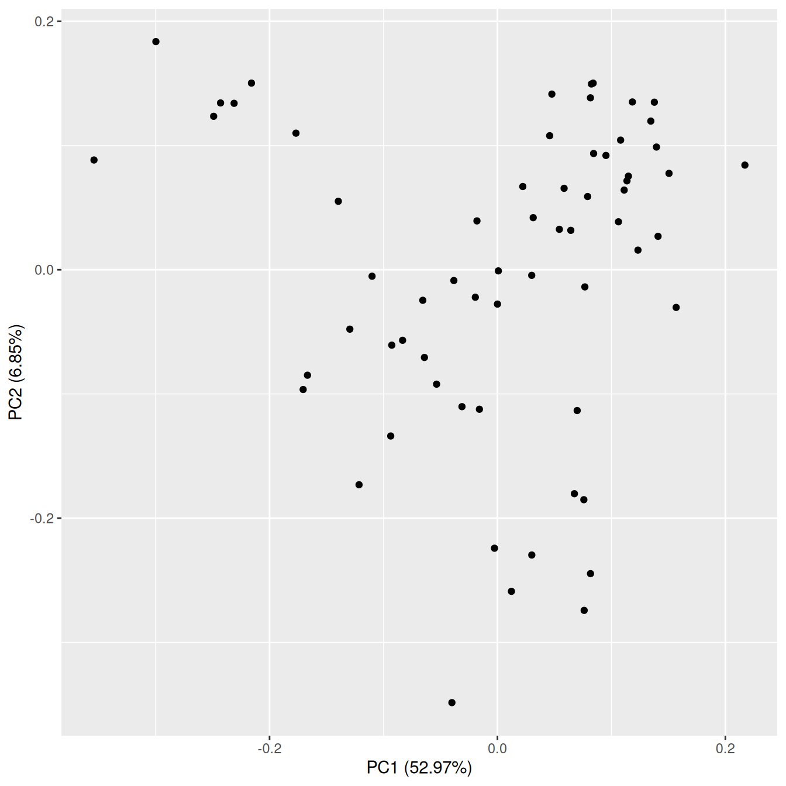
18.2 Biplot (Scores + Loadings)
How much each variable contribute to each principal component is stored in vectors. They are called loadings, which are often presented together with the scores. The plot is called “Biplot”.
autoplot(pca, loadings = TRUE, loadings.label = TRUE)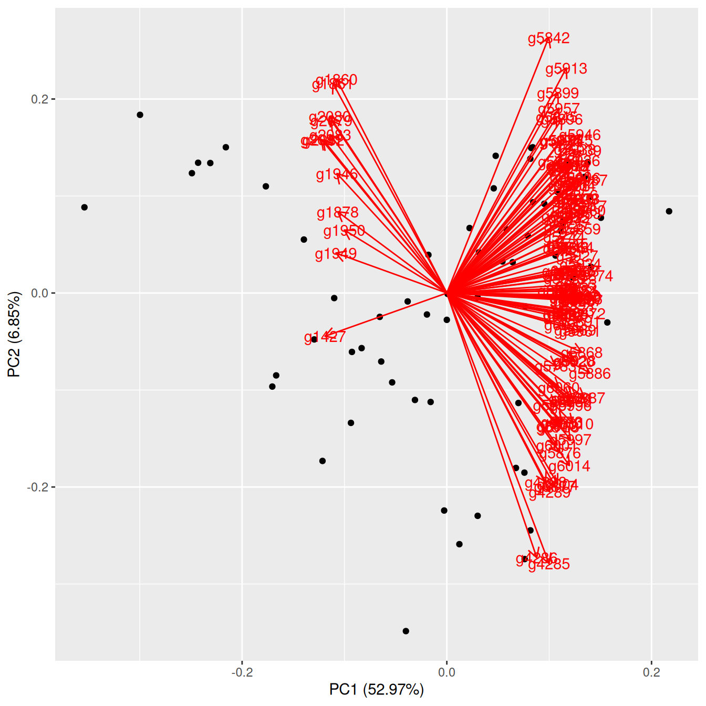
18.3 Scree plot
The proportion explained by each principal component is presented in a bar or line plot. It is called “scree plot”.
scree <- tibble(
pc = paste0("PC", seq(pca$sdev)),
s = pca$sdev^2,
expl = s / sum(s) * 100
) |>
mutate(pc = factor(pc, levels = pc)) |>
slice(1:10)
ggplot(scree, aes(pc, expl)) +
geom_col(fill = "steelblue") +
xlab("Principal component") +
ylab("Variance explained [%]")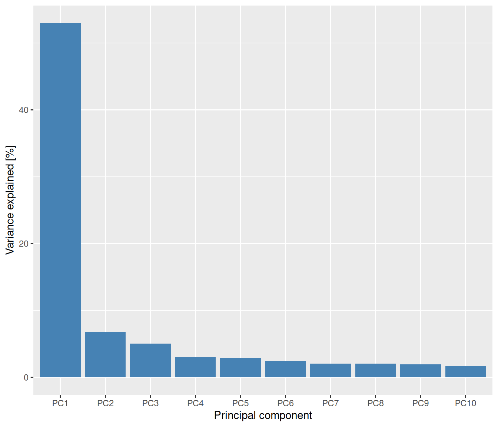